Background essay for Lecture 1 · PHIL 210 World Religions · Chapter 12: Islam · Steven Austin
This essay is the full written version of Lecture 1. It follows the lecture from beginning to end and includes the required independent study, placed in the story where each topic belongs, so that you can read the whole lecture as one continuous account. Page numbers in parentheses refer to Robert E. Van Voorst, RELG: World, 4th edition, Chapter 12. Material that does not come from the textbook is marked as outside the textbook, and the notes at the end give its sources. Where the textbook reports what Muslims believe, or what Muslim tradition holds, the essay says so.
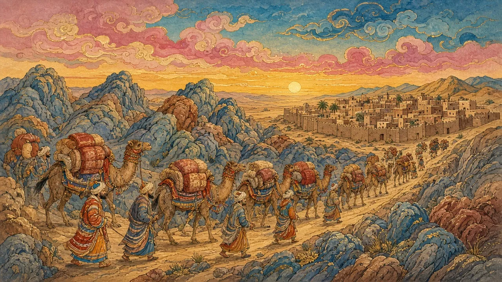
Welcome to Islam, the world’s second-largest religion. This first lecture is a story with a clear arc: a caravan town in western Arabia in the 500s, an orphan who grows up there, a voice in a mountain cave, persecution, a flight by night, and, within ten years, a new community that rules most of Arabia. Along the way you will learn what the word Islam means (Review Question 1) and what happened at the Hijra in 622 (Review Question 2).
Islam is a living faith of about two billion people, so this lecture treats it with the same respect you would want for your own tradition. When this essay describes what Muslims believe happened, it says so; when it reports what historians think, it says that too. Following Muslim custom, the lectures never picture the Prophet Muhammad. The images in the lectures and in this essay are either real photographs and manuscripts or newly made paintings in the style of Persian and Ottoman miniatures, and they show places, objects, and ordinary people instead.1
1. “There is no god but God, and Muhammad is God’s prophet”
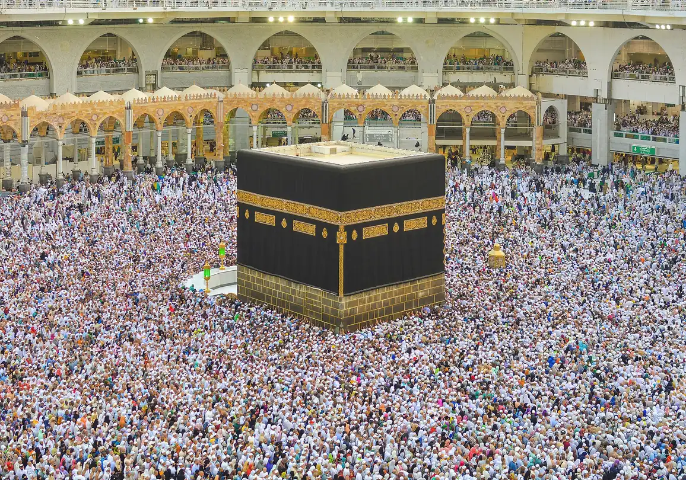
Begin with one sentence. The chapter opens with it as an epigraph, “There is no god but God, and Muhammad is God’s prophet,” and labels it the main statement of belief in Islam (pp. 290–291). In Arabic it is called the shahada, the confession of faith, and it is the first of the Five Pillars you will study in Lecture 4. Notice its two halves: one God, and one messenger. Everything in this lecture explains how those two ideas came together in one life and one city.
The photograph above shows the Grand Mosque in Mecca during the pilgrimage. At its center stands the cube-shaped shrine, the Kaaba, covered in black cloth. The chapter invites you to imagine your own visit (pp. 290–291): you would dress in plain white cloth, walk seven times around the shrine, run between two hills as Hagar did, and stand on the Plain of Arafat. Unless you are a Muslim, you cannot actually enter Mecca, so the visit is done “with respectful imagination.”
Keep this picture in mind. By the end of this essay you will know why a shrine that once held idols became the center of a faith that rejects idols completely.2
2. About Two Billion Submitters
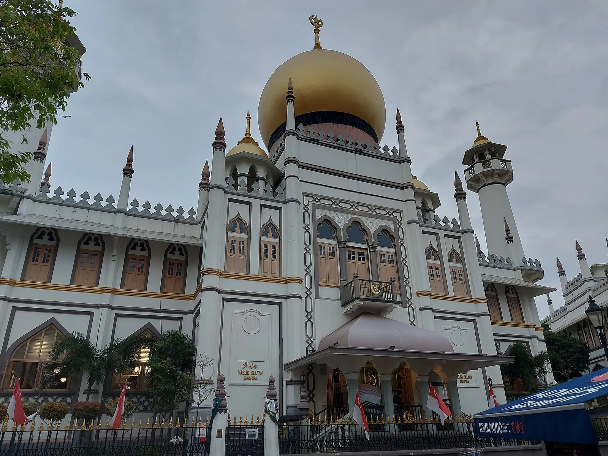
Who are we talking about? The chapter, written in 2018, says Islam has “about 1.3 billion followers, almost one of every five people,” and that it is the world’s second-largest religion after Christianity (p. 291). Newer counts are higher. In June 2025 the Pew Research Center estimated about 2.0 billion Muslims in 2020, about 25.6 percent of the world, and found that Islam was the fastest-growing major religion between 2010 and 2020. This figure is outside the textbook; for the quiz, know the textbook’s 1.3 billion and that the real number today is about 2 billion.
The bigger surprise for most students is where Muslims live. Although Islam is traditionally associated with the Middle East, the largest Muslim populations are in South and Southeast Asia: Indonesia, Malaysia, Bangladesh, Pakistan, and India. Indonesia has the most Muslims of any country, around 200 million, and if trends continue India may have about 311 million Muslims by 2050, making it the country with the most Muslims in the world (pp. 291–292). There are also large Muslim populations in Central Asia and China.
The photograph above shows the Sultan Mosque in Singapore, which the chapter uses to show a blend of Arab and South Asian styles (p. 292).3
3. Where Muslims Live: Then and Now
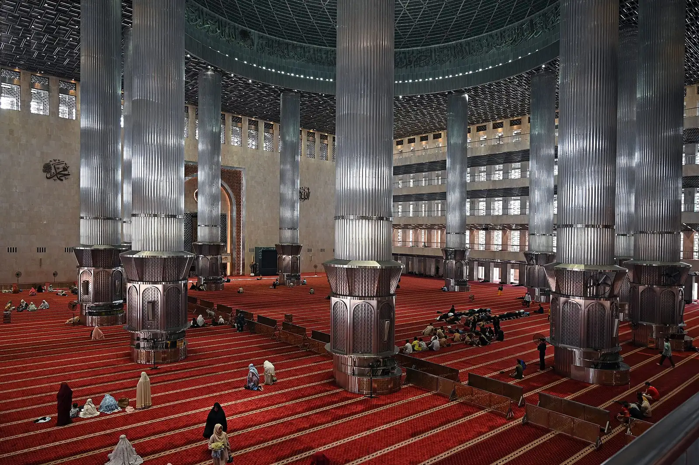
Numbers about religion change quickly and are hard to measure, and this section teaches you to read them carefully.
The textbook was written around 2018. It says Islam has about 1.3 billion followers, almost one of every five people, and is present in virtually every part of the world (p. 291). It says the largest Muslim populations are in South Asia, that Indonesia has the most Muslims of any country at around 200 million, and that India may have 311 million Muslims by 2050, the most of any nation (p. 292). It also says about 8 million Muslims live in North America and around 15 million in Europe (p. 291).
Read closely and you will find the chapter does not quite agree with itself. Later it says the 2.7 million U.S. Muslims are expected to grow to about 8 million by 2050 (p. 321), and it gives Europe about 14 million (p. 320). So “8 million in North America” on p. 291 looks like a projection or a much older high estimate. When sources disagree, a careful student notes the disagreement and prefers the most recent, best-documented figure. Notice, too, that whether “Europe” includes Russia and Turkey changes the total a great deal.
Newer figures come from the Pew Research Center’s June 2025 report using 2020 data: about 2.0 billion Muslims worldwide, 25.6 percent of humanity, with Islam the fastest-growing major religion from 2010 to 2020, mainly because of young populations and high birth rates rather than conversion. The four largest Muslim populations were Indonesia (about 239 million), Pakistan (227 million), India (213 million), and Bangladesh (151 million). Pew’s 2017 estimate for the United States was about 3.45 million.
The photograph above shows the interior of the Istiqlal Mosque in Jakarta, one of the largest mosques in the world, a reminder that the center of the Muslim population is in Asia. Connect it: Lecture 5 covers Muslims in Europe and North America.4
| Textbook (2018) | Newer (outside the textbook) | |
|---|---|---|
| World | about 1.3 billion, almost 1 in 5 | about 2.0 billion, 25.6% (Pew, 2020 data) |
| Indonesia | around 200 million | about 239 million (Pew, 2020 data) |
| India | may reach 311 million by 2050 | about 213 million (Pew, 2020 data) |
| U.S. / N. America | 8 million in N. America (p. 291); 2.7 million in U.S. (p. 321) | U.S. about 3.45 million (Pew, 2017) |
| Europe | 15 million (p. 291); 14 million (p. 320) | about 46 million, 6% (Pew, 2020 data, incl. Russia) |
4. Islam Means “Submission,” Not “Peace”
Here is the meaning of the name, and it is a quiz favorite. The chapter says: “Muhammad and his first followers referred to their movement as Islam, ‘submission,’ always understood as submission to God” (p. 292). Followers came to be called Muslims, “submitters.”
Why the warning about peace? Some modern explanations say Islam comes from salam, the Arabic word for peace. The two words share a root, but they are different words. The chapter puts it this way: “Although Muslims see peace as coming from submission to God, the great majority of Muslims correctly understand the name of their religion as submission to God, not peace with God” (p. 292). In other words, peace is a result; submission is the meaning.
The key terms below cover three names you may meet. “Mohammedanism” matters because it gets Islam backward: Muslims say Muhammad was only the human messenger, not the object of worship.
Review Question 1 (p. 292): What is the significance of the literal translation of the word “Islam”? Anchor sentences, word for word: “Muhammad and his first followers referred to their movement as Islam, ‘submission,’ always understood as submission to God.” and “Although Muslims see peace as coming from submission to God, the great majority of Muslims correctly understand the name of their religion as submission to God, not peace with God.”5
Chapter 12 Review Question 1
What is the significance of the literal translation of the word “Islam”?
Answer Review Question 1 in your own words before you go on, in two or three sentences. The previous section contains everything you need.
A strong answer does three things. First, it gives the literal meaning of the word and says to whom the submission is directed. Second, it explains what a Muslim is, using the same root. Third, it handles the common confusion with peace: it says how the word for peace is related and why the textbook calls the “submission” reading the correct one. The key terms in the previous section add a useful extra detail about the older name “Mohammedanism” and why it is a misnomer; one sentence about it will strengthen your answer.
Both anchor sentences are on p. 292. Find them in your book, read the paragraph around them, and check that your answer uses their key words. The review questions are the backbone of the Chapter 12 Quiz, so it pays to write each answer down now while the material is fresh.6
5. Four Puzzles for Newcomers
Before the story, the chapter names four things that often puzzle North American students (p. 292). Treat them as questions to carry through all five lectures.
First, Islam can look centered on Muhammad. Muslims add “Peace be upon him” whenever they mention his name, and Muhammad is the most common first name in the world. Yet Muhammad is not at the heart of Muslim devotion; Muslims believe he was only the human conduit of God’s revelations. Second, Islam is a deeply spiritual faith and also a whole way of life for a community, so from its founding it has preferred to function as both a religion and a state; it is the official religion in twenty-five nations in the Middle East, North Africa, and South Asia. Third, some Muslims seem to speak for all of Islam, but no one really can, because Islam is so diverse; some nations require women to wear a full-body veil, while in others women wear ordinary clothes with a headscarf. Fourth, many non-Muslims think Islam is violent, but the vast majority of Muslims do not engage in or support violence for their faith.
Lecture 5, your independent-study lecture, comes back to the third and fourth puzzles under the title “Who speaks for Islam?”7
6. The Symbol of Islam?
You have probably seen the crescent and star used as a symbol of Islam, on charts of world religions, on flags, and on mosques. The chapter’s boxed feature, “The Symbol of Islam?” (p. 294, Figure 12.1), asks whether that is right.
Its answer is no, at least not officially. Because Islam is typically against religious images and pictures, whether worshiped or not, it has not officially adopted pictorial symbols for itself. The crescent and star is featured on the flags of several countries in the Islamic world, but it was the symbol of the Ottoman Empire, which governed much of Islam from about 1300 to 1920, not of Islam as a whole. The box concludes that it is “no more than five hundred years old,” young compared with Islam itself. The flag shown here is the Ottoman flag used from 1844 to 1922; modern Turkey’s flag is almost the same.
The box also debunks a popular story: that the crescent roll, or croissant, was invented in Vienna to celebrate the European defeat of the Ottoman siege of that city in 1683. It has no solid historical evidence behind it.
Two other points are worth remembering. Crescents without a star are often found at the top of mosques, where they remind Muslims of God’s rule over creation and of the importance of the moon in the Muslim religious calendar, which follows the phases of the moon. And the crescent and star are carved on the gravestones of Muslim members of the U.S. armed forces buried in U.S. military cemeteries. “But on the whole, Islam has no official symbol” (p. 294).
Connect it: this is a good example of the third puzzle from the “Four Puzzles” section: outsiders often decide what stands for Islam. If you asked Muslims what represents their faith, many would point to the Kaaba, the Qur’an, or the words of the shahada instead.8
7. Mecca in the “Age of Ignorance”

Picture Mecca around the year 550. It sits in a dry, rocky valley in western Arabia, and it has one great asset: a shrine. The chapter describes the religion of Arabia at this time as polytheistic, worshiping many gods, a period later Muslims called the “age of ignorance” (p. 293). Mecca was the regional pilgrimage center. It had statues of the three “daughters of Allah,” a cube-shaped shrine dedicated to the god Hubal, and a sacred well. Pilgrims came, prayed, and traded, and the city’s leading tribe profited from them.
The chapter calls the moral code of the time “tribal humanism”: what mattered was loyalty to your tribe, bravery, and protection of the weak, with little belief in an afterlife (p. 293). Poets were the celebrities of this world; they praised their tribes and mocked their enemies. Remember that, because Muhammad’s opponents will later dismiss him as “only a poet.”
Keep three details for later: the cube-shaped shrine, the sacred well, and the idea of a high god called Allah with lesser gods around him. Muhammad will keep the shrine and the well and throw out everything else.9
8. Caravans, Cash, and the Hanifs

Mecca was getting rich. Camel caravans were important for lucrative Meccan trade, the chapter notes, and camels show up often in Islamic scripture and tradition (p. 293). Meccan merchants organized caravans that carried goods between Yemen in the south and Syria in the north. Tribal loyalty used to mean the strong protected the weak; now some clans grew wealthy while widows and orphans were left behind. In the painting above, a merchant weighs his silver while a widow and her children wait with an empty bowl. Muhammad’s early preaching will speak directly to that scene.
Mecca was also a crossroads of religions. Jews, Christians, and Zoroastrians lived in the region, and their belief in one God was known to Arabs. A few Arabs, called hanifs, “pious ones,” had already turned to the worship of Allah as the one and only God without joining either Judaism or Christianity (p. 293). They show that monotheism was not completely new to Arabia when Muhammad began to preach.
So the stage is set: a holy city full of idols, a market economy leaving the poor behind, and some people already looking for one God.10
9. An Orphan of the Quraysh
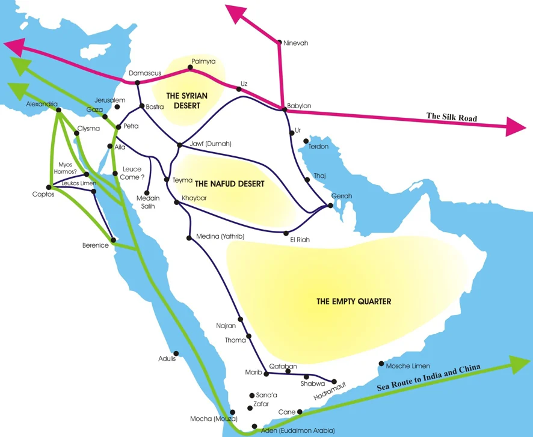
Into this world, around the year 570, Muhammad was born in Mecca. His family belonged to the Quraysh, the tribe that controlled Mecca and its shrine, but his own branch was humble. Tragedy came early: he was orphaned as a child and raised by relatives, who could not afford schooling for him (p. 293). Muslim tradition adds that his father died before he was born and his mother when he was about six, and that he was raised first by a grandfather and then by his uncle Abu Talib.
As a young man he went to work on the caravans, first as a camel driver and then as a caravan manager, traveling routes like the ones on the map above (pp. 293–294). His scant resources meant he could not marry at the usual age. Tradition remembers him in these years by the nickname al-Amin, “the trustworthy.”
Notice how much of his later message grows from this life: an orphan who would insist on care for orphans, a man of the trade roads who met people of many faiths. The map shows trade routes of ancient Arabia; the main north–south route along the Red Sea coast passed close to Mecca.11
10. Why These Decks Never Picture the Prophet
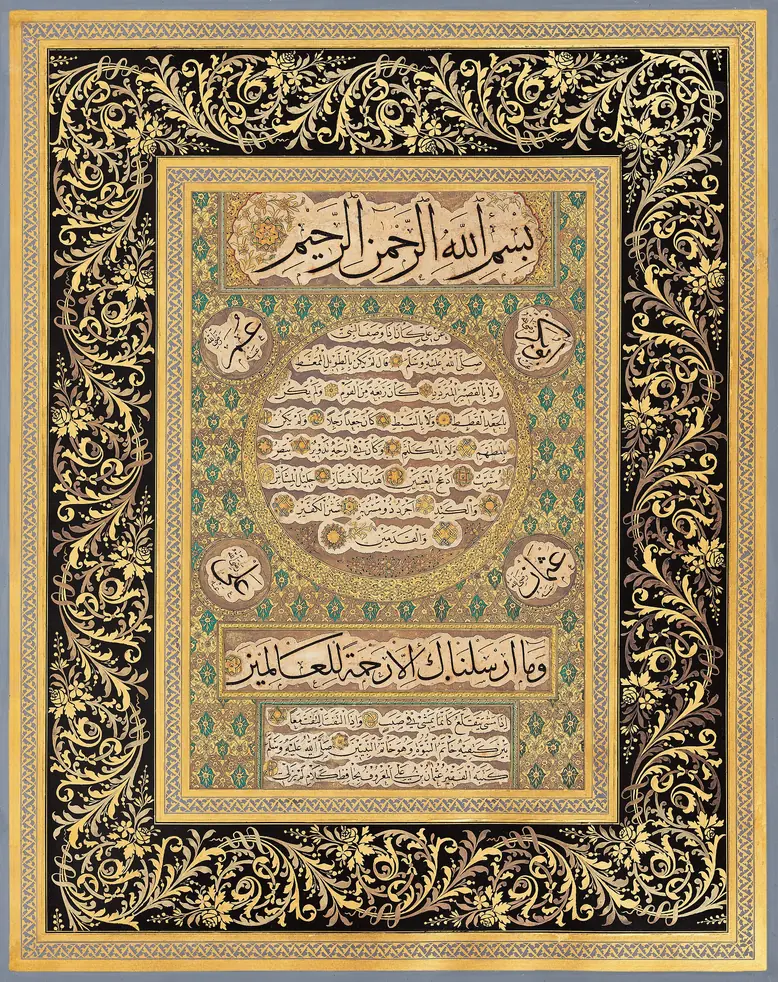
None of the images in these lectures or in this essay show Muhammad. That is a deliberate choice, and this section explains why.
Islam forbids idolatry so strongly that Muslims forbid anything that may encourage it or make it possible. So they do not make images or pictures of God, and “if Muhammad is depicted at all, his face is omitted” (p. 306). If people began venerating a picture of the Prophet, they might drift toward honoring a human being in a way Islam reserves for God alone. The chapter does reproduce one older exception, a Persian manuscript painting dated 1315 showing Muhammad on horseback, and its caption notes that in some Muslim art from Persia and Turkey his face is pictured, “contrary to most Muslim convention” (p. 296). These lectures follow the majority convention and show no images of him at all.
The chapter’s opening vignette for its history section makes the same point through film (p. 293). The Message (1977) told the story of the early Muslims without showing Muhammad’s face or letting the audience hear his voice. Its remake, The Messenger of Peace, produced by Oscar Zoghbi, who had worked on the original, follows the same rule: the Prophet “won’t be seen or heard on screen.”
The image above shows a beautiful alternative. An Ottoman hilye (hil-YEH) is a calligraphic panel that describes the Prophet’s appearance and character in words drawn from early reports, so that believers can picture him without a picture. This one is by the master calligrapher Hafiz Osman (1642–1698), who gave the form its classic layout.
Connect it: Lecture 3 shows how this caution shaped mosque art: geometry, plants, and calligraphy instead of human figures.12
11. Khadija
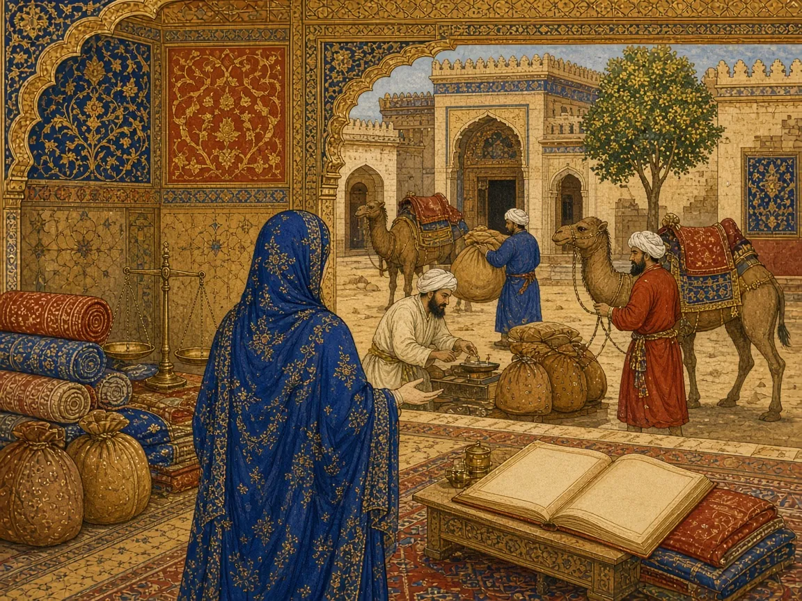
The turning point of Muhammad’s young life was a woman named Khadija (kah-DEE-juh). She was a wealthy widow engaged in trade, and she hired Muhammad. When she suggested marriage, he agreed, even though she was fifteen years older (p. 294). The chapter says they “were devoted exclusively to each other; while she lived, he didn’t take another wife.” Muhammad prospered and became a wealthy merchant, and his business travel brought him into contact with Jews, Christians, Zoroastrians, hanifs, and polytheists.
They had six children, four girls and two boys, but the boys died in childhood, “a situation that has influenced Islam through today” (p. 294). Why? With no son to succeed him, the question of leadership was left open, and that question split Sunnis from Shi‘as. Their daughter Fatima married Muhammad’s cousin Ali, the hero of the Shi‘a story in Lecture 2.
Khadija believed in Muhammad’s message from the start (p. 295). After her death in 619, he married several more times; the required study for Lecture 5 covers those marriages, including the much-debated marriage to A’isha.13
12. “Recite!”
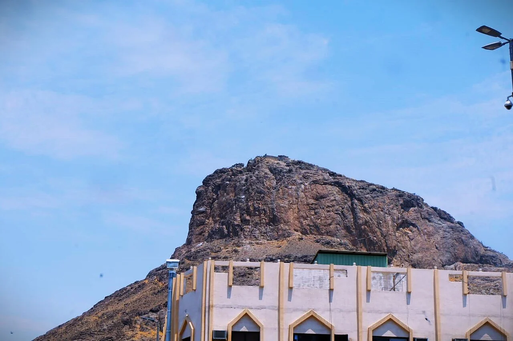
Now the story turns. In 610, when he was about forty, Muhammad was meditating continually for days and nights in a cave on a mountain outside Mecca. The photograph above shows that mountain, Jabal al-Nour, the “Mountain of Light”; the cave of Hira is near its top. According to Muslim belief, the angel Gabriel, known to Jews and Christians from the Bible, spoke to him there (p. 294).
“Recite!” the angel commanded, words Muslims find in the Qur’an’s 96th chapter. Muhammad submitted to the command and recited Gabriel’s words to others. The chapter’s summary is worth remembering: “the uncertain seeker of truth became a bold prophet,” who found freedom and courage in submission (p. 294). According to Islamic tradition, the first revelation came on the night of the twenty-seventh day of Ramadan, and the month-long fast Muslims undertake in Ramadan celebrates the giving of the revelations. You will study that fast in Lecture 4.
Where did his monotheism come from? The chapter notes that much current scholarship credits his contact with other faiths, while traditional Muslim teaching holds that he received monotheism from Allah. A later section of this essay, “Where Did Muhammad’s Monotheism Come From?,” explores both views.14
13. One God, One Judgment

What did Muhammad actually preach in Mecca? The chapter says his early message had two main themes (p. 295). First, only one God exists, Allah, Arabic for “the God,” who commands people to believe in this one God and to submit to God’s holy will. Second, a day of judgment will certainly come, when those who have submitted to God will be rewarded forever and those who have not will be punished eternally.
Other themes run alongside these: generosity to the poor, to widows, and to orphans; the presence and goodness of God in the natural world; and the prophetic call of Muhammad himself. Think back to the painting of the caravan market. A message that demanded care for widows and orphans was aimed squarely at Mecca’s new rich. The chapter concludes that these themes show Islam from its beginning stood in the line of Judaism and Christianity, the Abrahamic monotheisms (p. 295).
The image above is real. These are pages of the Birmingham Qur’an, one of the oldest surviving Qur’an manuscripts. Radiocarbon testing announced in 2015 dated its parchment to between about 568 and 645, roughly the lifetime of Muhammad. Lecture 3 explains how these recitations became the written Qur’an.15
14. Where Did Muhammad’s Monotheism Come From?
This section practices a skill you will need all semester: telling apart what a religious tradition believes and what historians argue, and stating both fairly.
The chapter lays out both views in one sentence (p. 294). Muhammad’s business travel “brought him into contact with Jews, Christians, and Zoroastrians as well as hanifs and believers in many gods. Much current scholarship suggests that this contact likely helped shape his own faith as he began to doubt his own inherited religion, although traditional Muslim teaching maintains that Muhammad obtained monotheism from Allah.”
On the scholarly view, a thoughtful merchant who heard Jews and Christians speak of Abraham, Moses, Jesus, and a coming judgment, and who knew Arab hanifs already worshiping one God, would have absorbed those ideas, and his genius was to proclaim them powerfully to Arabs in their own language. The many biblical figures in the Qur’an, which you will meet in Lecture 3, are often cited as evidence.
Muslim tradition sees it differently. Muhammad’s monotheism came directly from God through the angel Gabriel, not from human teachers. Tradition also stresses that Muhammad could not read or write, so he could not have borrowed from scriptures; the beauty of the Qur’an, coming from an unlettered man, is itself taken as proof of its divine origin. Recall that when his critics asked for miracles, Muhammad answered that the revelations themselves were the sign (p. 295).
Notice that the two views are not answering quite the same question. Historians ask what influences can be traced; believers ask where the message ultimately came from. A historian cannot prove or disprove that God spoke to Muhammad. In this course, describe each view accurately and say whose view it is: “Muslims believe…” or “many scholars argue…”. Connect it: Lecture 3 returns to the same two explanations for the biblical stories in the Qur’an (p. 309).16
15. “Only a Poet”

Khadija and other members of Muhammad’s immediate family believed him, but when he began his public proclamations, probably around 613, some Meccans became hostile (p. 295). Still, followers came. In ten years Muslims numbered in the thousands, and most of them were relatively young and of lower social status: exactly the people the new trade economy had left behind.
Mecca’s tribal leaders looked on the Muslims as social deviants whose denial of the traditional gods, and whose growing numbers, threatened the economic foundations of the city. Their wealth came from pilgrims who visited the shrines. So they ridiculed Muhammad as a lunatic, “only a poet” inventing his own revelations, a charge the Qur’an itself records (52:30–49). In a culture where poets were famous for clever verses, this was a way of saying he was just a talented entertainer. They also pointed out that he worked no miracles. He responded that the revelations themselves were a supernatural sign (p. 295).
Then came the hardest year. Persecution escalated, and in 619 both Khadija and his uncle, the clan leader who had protected him, died. Muslims remember 619 as the Year of Sorrow. Without his uncle’s protection, Muhammad’s position in Mecca deteriorated. Something had to change.17
16. The Night Journey and Ascension
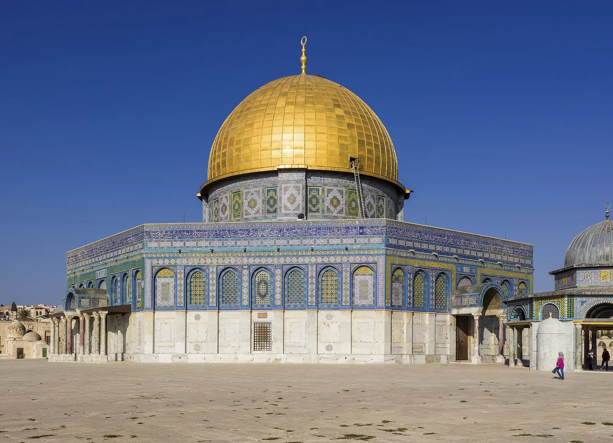
The chapter mentions this story twice in passing, and it is worth knowing in full because it ties Islam to Jerusalem. Among the hadith, the collected reports of Muhammad’s words and deeds that you will study in Lecture 5, are stories of “Muhammad’s important Night Journey from Mecca to Jerusalem and back to Mecca, as well as his ascent to heaven while in Jerusalem to receive revelations” (p. 311). Tradition places the journey around 620, in Muhammad’s hardest years in Mecca. The Qur’an alludes to it when it praises God for taking His servant by night “to the farthest mosque” (17:1), which Muslims identify with Jerusalem.
The photograph above shows the Dome of the Rock, which the chapter says was built in the seventh century; it was completed in 691 under the Umayyad caliph Abd al-Malik. It stands on the site Muslims call the Noble Sanctuary, the Temple Mount of the ancient Jewish Temple, and Muslims hold that Muhammad made his ascent to heaven from the prominent rock now inside it (p. 319). It is a secondary pilgrimage site, and the chapter’s author calls it the third holiest site in Islam and one of the most beautiful buildings he had ever seen (p. 307). Its walls carry Qur’anic calligraphy but no images of people.
Popular tradition, outside the textbook, fills in vivid details. Muhammad rode a winged white steed named Buraq. In the heavens he met earlier prophets, including Abraham, Moses, and Jesus. God first commanded fifty daily prayers; on Moses’ advice Muhammad asked for fewer until the number came down to five. Treat these details as tradition: Muslims themselves have long debated whether the journey was bodily or a vision.
Connect it: the five daily prayers are the second pillar (Lecture 4), and Jerusalem’s place in this story helps explain why the first Muslims prayed toward it.18
17. The Hijra: Flight to Medina
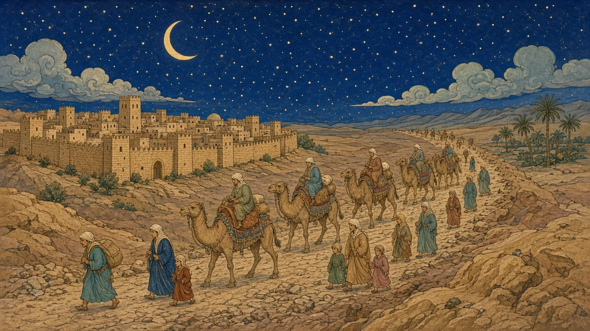
The way out came from Yathrib, an oasis town about two hundred miles north whose feuding clans, according to tradition, invited Muhammad as a trusted outsider to keep the peace. The chapter’s words are the anchor for Review Question 2: “In 622 C.E., the Prophet and his followers fled Mecca for Medina (then called Yathrib), about two hundred miles to the north” (p. 295).
The move gave Islam its calendar. “This relocation is called the Hijra, ‘flight,’ and is used to mark year 1 A.H. (‘in the year of the flight’) on the Islamic calendar, much as Christians traditionally use A.D., in the year of our Lord (Jesus)” (p. 295). Why this moment, not Muhammad’s birth? Because here Islam became a community, not just a message.
The Muslims were welcomed in Medina, and Muhammad was soon in charge of the fractious town. He would live in Medina for the rest of his life (p. 295).
Review Question 2 (p. 295): What happened during the event known as the Hijra in 622 C.E.? Anchor sentences, word for word: “In 622 C.E., the Prophet and his followers fled Mecca for Medina (then called Yathrib), about two hundred miles to the north.” and “This relocation is called the Hijra, ‘flight,’ and is used to mark year 1 A.H. (‘in the year of the flight’) on the Islamic calendar, much as Christians traditionally use A.D., in the year of our Lord (Jesus).”19
18. Prophet and Statesman

In Medina everything changed. In Mecca Muhammad had been a preacher with a persecuted following; in Medina he was the leader of a town. The scholar Daniel Peterson, quoted in the chapter, puts it this way: in Medina “Muhammad became a prophet-statesman, the founder of a political order and eventually of an empire that would change the history of the world. And Islam took on a political dimension that it has never abandoned” (p. 295). Remember the second puzzle from earlier: this is where Islam’s union of religion and state begins.
In Medina, Islam developed into a well-organized religious community, the umma (OOM-uh). Its members were bound to each other not by tribe or clan but by submission to God, a revolutionary idea in tribal Arabia. The painting imagines the community building its first simple mosque together out of palm trunks and mud brick.
The revelations changed too. The chapter says the principles of a legal system came in divine revelations given at Medina, as did details about prayer, fasting, charity, and pilgrimage, “key practices that would later become the pillars of Islam” (p. 295). This is the supporting detail for Review Question 2: the Hijra transformed Muhammad’s role and allowed a well-organized community to form.20
Chapter 12 Review Question 2
What happened during the event known as the Hijra in 622 C.E.?
Stop and write your answer to Review Question 2 now, in three or four sentences.
A complete answer has two parts. The first part is the event itself: who left, from where, to where, in what year, and how far. Use the old name of the destination too, since the anchor sentence gives it. Then explain the name of the event and the calendar it began, including what the abbreviation A.H. means and the comparison the textbook makes with the Christian calendar.
The second part explains why the event mattered: how the move transformed Muhammad’s role and allowed a well-organized community to form. Use the key term for the community and the Peterson phrase about a “prophet-statesman.” Mention that the revelations given in Medina supplied laws and the details of prayer, fasting, charity, and pilgrimage.
Both anchor sentences are on p. 295. Check your sentences against them before moving on. If you can also say why the calendar starts with the Hijra and not with Muhammad’s birth, you understand the event, not just the facts.21
19. Badr, and a Break with Medina’s Jews
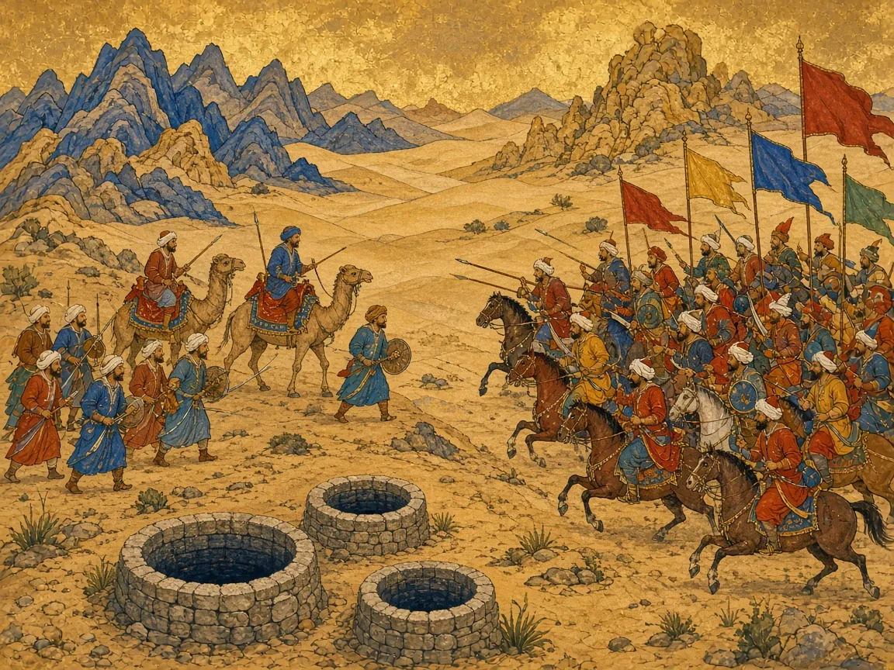
Medina and Mecca were now at war. The Muslims organized armed raids on Meccan caravans, the lifeblood of Mecca’s economy, to punish the Meccans for their hostility. The chapter says the raids continued until the Muslim victory over Mecca at the Battle of Badr (BAHD-er) in 624. The booty from the battle greatly increased the Muslims’ financial strength, Muhammad gained great respect in Arabia, and the chapter calls the battle a turning point in the fortunes of Islam (p. 295). Badr did not end the war, however; as the section “Eight Years of War, Then Mecca” shows, the fighting went on until 630.
Medina also had several Jewish tribes. Muhammad made a pact with them: they did not need to become Muslims and would have a rich measure of religious freedom. The relationship failed. The chapter reports that hundreds of Medinan Jews were killed and the rest expelled between 624 and 627, after a failed Jewish attempt to assassinate Muhammad (p. 295). Historians still debate the details and motives; for this course, know the textbook’s account and treat it as a serious and painful episode. Lecture 3 shows that under later Muslim rule Jews became a protected “People of the Book.”
The chapter says this break led to a greater reliance on Arabian religious practices reformed for Islamic use (p. 295). Muslims now prayed toward Mecca instead of Jerusalem (Qur’an 2:142); the first Muslim pilgrimage to Mecca took place in 629; and the month-long Ramadan fast replaced the ten-day fast connected with the Jewish Day of Atonement. The next section, “How Medina Reshaped Muslim Worship,” looks at these changes more closely.22
20. How Medina Reshaped Muslim Worship

When Muhammad arrived in Medina, Muslim worship looked in some ways like Jewish worship. Muslims prayed facing Jerusalem, and they kept a fast linked to the Jewish Day of Atonement. Within a few years both had changed, and the changes gave Islam its distinctive shape. This section gathers them in one place because they are the bridge from Lecture 1’s story to Lecture 4 on the Five Pillars.
The chapter connects the changes to the break with Medina’s Jews, which “led to a more powerful dependence on Arabian religious practices reformed for Islamic use” (p. 295). First, the direction of prayer: Muslims were no longer to pray facing Jerusalem, but toward Mecca (Qur’an 2:142). The direction of prayer is the qiblah, and every mosque has a niche that shows it, as you will see in Lecture 4 (p. 317). Second, fasting: the month-long Ramadan fast replaced the ten-day fast connected with the Jewish Day of Atonement. Ramadan was fitting because, as you learned, tradition holds the first revelation came during that month. Third, pilgrimage: the first Muslim pilgrimage to Mecca took place in 629, the year before the city surrendered, and pilgrimage to Jerusalem fell in importance. The chapter adds that “these changes in prayer, pilgrimage, and fasting became permanent in Islam, and are still key practices today.”
Fourth, law. The revelations given at Medina supplied the principles of a legal system and details about prayer, fasting, charity, and pilgrimage, “key practices that would later become the pillars of Islam” (p. 295). The photograph above shows one result today: pilgrims circling the Kaaba at night.
Muslims understand these changes as God’s guidance restoring the faith of Abraham, centered on the house he built in Mecca. Connect it: Lecture 4, “The Hajj: Who, When, Where.”23
21. Eight Years of War, Then Mecca
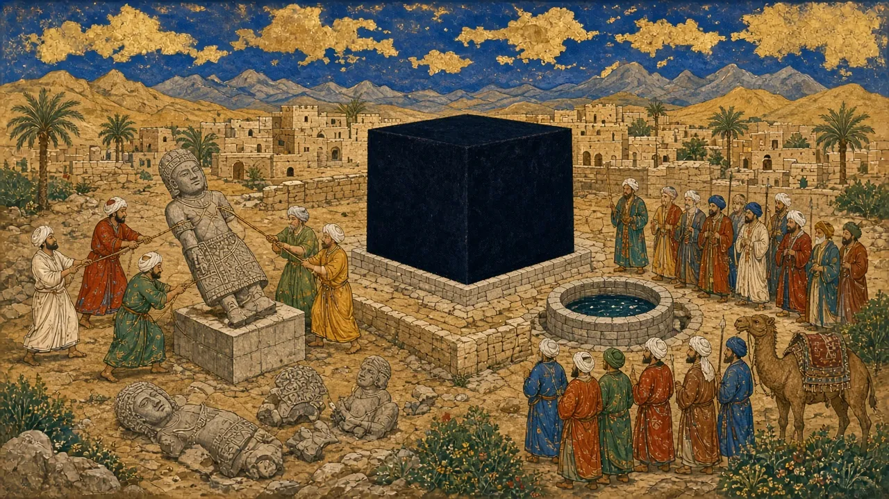
Medina and Mecca were at war for most of the 620s. The chapter says Muslims organized armed raids on Meccan caravans and won a military victory over Mecca at Badr in 624, and that many Arab tribes came into Islam while Muhammad controlled Medina. It then says his army got Mecca “to surrender without a fight in 630” (p. 295). That describes the last day of the war, not the war.
Outside the textbook, the traditional biographies (Ibn Ishaq, al-Waqidi) and modern historians fill in the years between. Meccan armies defeated the Muslims at Uhud in 625 and besieged Medina in 627, the Battle of the Trench, and failed. In 628 the two sides agreed to the Hudaybiyya truce. Late in 629 Mecca’s allies attacked Muhammad’s allies, ending the truce, and in January 630 Muhammad marched on Mecca with about 10,000 men. The Meccan leader Abu Sufyan submitted, and most of the city surrendered under a general amnesty. Khalid ibn al-Walid’s column still fought at al-Khandama, where about a dozen Meccans died. About ten people were named for death; most were pardoned, and about four were killed. The truce of Hudaybiyya had also let Muslims make their first pilgrimage to Mecca in 629, the pilgrimage the chapter mentions (p. 295). In the traditional accounts the fall of Mecca therefore came as the end of a long military and diplomatic struggle: Muhammad’s forces entered the city in four columns, the general amnesty covered those who stayed in their homes or laid down their arms, and Mecca’s leading families accepted Islam and his rule.
Then, the chapter says, Muhammad removed all the idols (tradition counts some 360 of them around the shrine) and kept only the Kaaba and its holy stone, which Muslims hold Abraham built for the one God (p. 295; Qur’an 2:125–127).24
22. Ruler of Arabia, 632

In the last two years of his life, Muhammad raised armies to conquer the important northern regions of the Arabian Peninsula, taking on the Christian Byzantine Empire in the process. When he died in Medina in 632, he ruled nearly all of the Arabian Peninsula; Islam had established itself permanently there and had become a rapidly growing religion (p. 296). On the map above, the darkest area is the territory brought under Muhammad’s rule by war, treaties, and conversion. The lighter colors show how far Muslim rule spread by conquest in the next century, all the way to Spain in the west and Central Asia in the east. The chapter’s Map 12.1 (p. 297) shows the same expansion.
Now notice the problem. Muhammad had brought the tribes of Arabia under one God and one community, through alliances, conversions, and war, but, the chapter says, “for whatever reason, Muhammad hadn’t publicly designated a successor,” and he had no surviving son. Who would lead the umma? The chapter calls this “the pressing issue” at Muhammad’s death and says how it was settled “affects Islam through today” (p. 296).
That is where Lecture 2 begins.25
23. Islam Timeline, Part 1: 570–632
Timelines are the skeleton of history. This section turns the chapter’s “Islam Timeline” (p. 325) and the Lecture 1 story into one table, with a link from each event back to the section that teaches it. Lecture 2 continues the timeline from 632 to 1923, and Lecture 5 adds the modern period.
Two dates need comment. The chapter’s text dates the first revelation to 610 (p. 294), but its timeline says “ca. 609” (p. 325). Both are approximate; Muslim tradition places the event when Muhammad was about forty. Use 610 unless your quiz says otherwise. The marriage to Khadija around 595 is not in the textbook; it comes from the traditional biography, which says Muhammad was about twenty-five and Khadija about forty, matching the chapter’s fifteen-year age gap.
Here is a study method that works well for history-heavy chapters. Cover the right two columns and try to say what happened in each year. Then cover the left column and try to put the events in order with their dates. Finally, explain the cause-and-effect chain in a short paragraph: new trade wealth in a polytheist pilgrimage city; a prophet who preached one God, judgment, and justice for the poor; persecution because his message threatened Mecca’s gods and money; a flight to Medina that created a community and a state; eight years of war that ended with Mecca’s surrender in 630; and a death that left no clear successor.
If you can tell that chain in your own words, you are ready for Lecture 2, which begins the moment Muhammad dies. Connect it: the next part of the timeline begins with the first caliph, Abu Bakr, in 632.26
| Date | Event | Where taught |
|---|---|---|
| 500s | Mecca a pilgrimage and trade center; many gods; hanifs | Age of Ignorance |
| ca. 570 | Birth of Muhammad in Mecca | Orphan of the Quraysh |
| ca. 595 | Marriage to Khadija | Khadija |
| 610 (timeline: ca. 609) | First revelation: “Recite!” | Recite! |
| ca. 613 | Public preaching begins | Only a Poet |
| 619 | Deaths of Khadija and Muhammad’s uncle | Only a Poet |
| 622 | Hijra to Medina; year 1 A.H. | The Hijra |
| 624–629 | Badr; break with Medina’s Jews; first pilgrimage (629) | Badr |
| 625–630 | Uhud, the Trench, the Hudaybiyya truce; Mecca surrenders to a Muslim army; idols removed | Eight Years of War |
| 632 | Death of Muhammad in Medina | Ruler of Arabia |
24. Check Yourself
Test yourself before you go on. Read each question, answer it out loud or on paper, and only then open it to reveal a short answer. Each answer has a link back to the section that teaches it.
If you missed more than one, go back now, because Lecture 2 builds directly on this story. The succession crisis only makes sense if you remember that Muhammad had no surviving son, that Abu Bakr was his father-in-law, and that Ali was his cousin and the husband of his daughter Fatima.27
What does Islam literally mean, and what does Muslim mean?
Islam means “submission” to God; a Muslim is a “submitter.” Review
Why is “Islam means peace” misleading?
Salam (peace) is a related but different word; Muslims see peace as coming from submission. Review
Who were the hanifs?
Pre-Islamic Arabs who worshiped one God. Review
What happened in 610, according to Muslim belief?
The angel Gabriel commanded Muhammad, “Recite!” Review
What was the Hijra, and why does it begin the calendar?
The 622 flight from Mecca to Medina (Yathrib), 200 miles north; year 1 A.H., when the umma began. Review
What happened in 630 and in 632?
After eight years of war, Mecca surrendered to Muhammad’s army with little resistance (630); Muhammad died ruling nearly all of Arabia (632). Review
Notes
1. Van Voorst, RELG: World, 4th ed., ch. 12, pp. 288–296 (learning outcomes, opening, the name Islam, and the life of Muhammad). [back]
2. Van Voorst, RELG: World, 4th ed., ch. 12, pp. 290–291. Pilgrim numbers vary by year; recent Hajj seasons have drawn roughly 1.6 to 2 million pilgrims (Saudi General Authority for Statistics). [back]
3. Van Voorst, RELG: World, 4th ed., ch. 12, pp. 291–292. Outside the textbook: Pew Research Center, “How the Global Religious Landscape Changed From 2010 to 2020” (June 9, 2025). [back]
4. Van Voorst, RELG: World, 4th ed., ch. 12, pp. 291–292, 320–321. Outside the textbook: Pew Research Center, “How the Global Religious Landscape Changed From 2010 to 2020” and “Muslim Population Change” (June 9, 2025); Pew, “New Estimates Show U.S. Muslim Population Continues to Grow” (Jan. 3, 2018). [back]
5. Van Voorst, RELG: World, 4th ed., ch. 12, pp. 292–293. [back]
6. Van Voorst, RELG: World, 4th ed., ch. 12, pp. 292–293; Chapter 12 Review Question 1. [back]
7. Van Voorst, RELG: World, 4th ed., ch. 12, p. 292. [back]
8. Van Voorst, RELG: World, 4th ed., ch. 12, p. 294 (boxed feature and Figure 12.1). [back]
9. Van Voorst, RELG: World, 4th ed., ch. 12, p. 293. [back]
10. Van Voorst, RELG: World, 4th ed., ch. 12, pp. 293–294. The rich-poor split in Mecca is a common theme in modern histories, e.g., Karen Armstrong, Islam: A Short History (2000). [back]
11. Van Voorst, RELG: World, 4th ed., ch. 12, pp. 293–294. Family details and the name al-Amin follow the traditional biography, Ibn Ishaq’s Sirat Rasul Allah, trans. A. Guillaume (Oxford, 1955). [back]
12. Van Voorst, RELG: World, 4th ed., ch. 12, pp. 293, 296, 306. Outside the textbook: Christiane Gruber, The Praiseworthy One: The Prophet Muhammad in Islamic Texts and Images (Indiana University Press, 2018). [back]
13. Van Voorst, RELG: World, 4th ed., ch. 12, pp. 294–295; pp. 313–314 for the later marriages. The date of the marriage (ca. 595) follows Ibn Ishaq’s traditional biography. [back]
14. Van Voorst, RELG: World, 4th ed., ch. 12, p. 294. The chapter’s timeline gives ca. 609 (p. 325); the text gives 610. [back]
15. Van Voorst, RELG: World, 4th ed., ch. 12, p. 295. Outside the textbook: University of Birmingham, radiocarbon dating announcement (July 22, 2015). [back]
16. Van Voorst, RELG: World, 4th ed., ch. 12, pp. 294–295, 309. The tradition that Muhammad was unlettered (Arabic ummi, Qur’an 7:157) is outside the chapter. [back]
17. Van Voorst, RELG: World, 4th ed., ch. 12, p. 295. “Year of Sorrow” is a traditional name, outside the textbook. [back]
18. Van Voorst, RELG: World, 4th ed., ch. 12, pp. 307, 311, 319. Outside the textbook: Qur’an 17:1; the fifty-to-five prayers account in Sahih al-Bukhari; Frederick S. Colby, Narrating Muhammad’s Night Journey (SUNY Press, 2008). [back]
19. Van Voorst, RELG: World, 4th ed., ch. 12, p. 295. Calendar date for 1448 A.H.: published Umm al-Qura calendar (Saudi Arabia); exact local start dates depend on moon sighting (outside the textbook). [back]
20. Van Voorst, RELG: World, 4th ed., ch. 12, p. 295 (Peterson quotation). The first mosque in Medina is described in Ibn Ishaq’s traditional biography. [back]
21. Van Voorst, RELG: World, 4th ed., ch. 12, p. 295; Chapter 12 Review Question 2. [back]
22. Van Voorst, RELG: World, 4th ed., ch. 12, p. 295. [back]
23. Van Voorst, RELG: World, 4th ed., ch. 12, pp. 295, 317. [back]
24. Van Voorst, RELG: World, 4th ed., ch. 12, p. 295. Outside the textbook: Ibn Ishaq, Sirat Rasul Allah (trans. Guillaume); W. Montgomery Watt, Muhammad at Medina (1956); Encyclopaedia Britannica, “Muhammad” (Medina period); Qur’an 2:125–127. [back]
25. Van Voorst, RELG: World, 4th ed., ch. 12, pp. 296–297. [back]
26. Van Voorst, RELG: World, 4th ed., ch. 12, pp. 293–296 and the Islam Timeline, p. 325. Date of the marriage to Khadija: Ibn Ishaq, Sirat Rasul Allah, trans. A. Guillaume (Oxford, 1955). [back]
27. Van Voorst, RELG: World, 4th ed., ch. 12, pp. 290–297. [back]